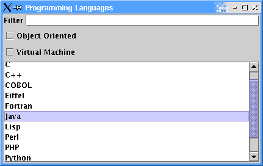

Glazed Lists Tutorial
Part 9 - JList
We've already demonstrated putting Glazed Lists into a JTable and
JComboBox and now we'll put it into a JList.
The EventJList Model
We will now replace the JTable in our program with a JList. We will keep the
filters and sorting, but there will no longer be a table header for changing the
sorting order.
public void display() {
EventJList eventJList = new EventJList(customFilteredLanguages);
JFrame frame = new JFrame("Programming Languages");
frame.getContentPane().setLayout(new GridBagLayout());
frame.getContentPane().add(new JLabel("Filter"), ...);
frame.getContentPane().add(filteredLanguages.getFilterEdit(), ...);
frame.getContentPane().add(customFilteredLanguages.getObjectOrientedCheckBox(), ...);
frame.getContentPane().add(customFilteredLanguages.getVirtualMachineCheckBox(), ...);
frame.getContentPane().add(new JScrollPane(eventJList.getJList()), ...);
frame.setSize(640, 480);
frame.show();
}
|

As we have demonstrated with JList and JComboBox, Glazed Lists enables you
to easily change between widgets while retaining your model. This is also a powerful
tool to display the same list in different ways in the same application.